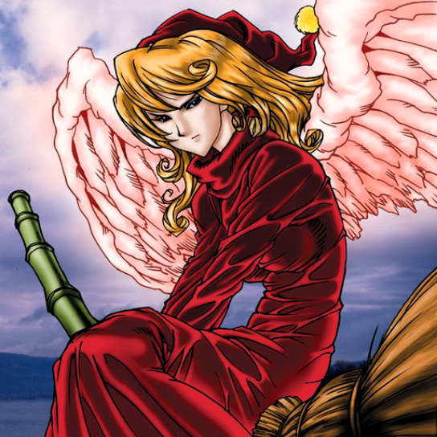

Fairywitch

STATS
ATK: 800
DEF: 1000DECK COST
Deck Cost per Card: 18Fusion List (22 Possible Fusions)
- Fairywitch + Air Marmot of Nefariousness = Nekogal #2
- Fairywitch + Ancient Jar = Mystical Sand
- Fairywitch + Dancing Elf = Dark Elf
- Fairywitch + Electric Snake = The Immortal of Thunder
- Fairywitch + Goddess with the Third Eye = Queen of Autumn Leaves
- Fairywitch + Haniwa = Mystical Sand
- Fairywitch + Jinzo #7 = Disk Magician
- Fairywitch + Key Mace = Dark Witch
- Fairywitch + Laughing Flower = Queen of Autumn Leaves
- Fairywitch + Lunar Queen Elzaim = Dark Witch
- Fairywitch + Master & Expert = Nekogal #2
- Fairywitch + Milus Radiant = Nekogal #2
- Fairywitch + Muka Muka = Mystical Sand
- Fairywitch + Mystic Lamp = Lord of the Lamp
- Fairywitch + Phantom Ghost = Magical Ghost
- Fairywitch + Pot the Trick = Mystical Sand
- Fairywitch + Rainbow Flower = Queen of Autumn Leaves
- Fairywitch + Ray & Temperature = Dark Witch
- Fairywitch + Spike Seadra = Kaminari Attack
- Fairywitch + Stone Ghost = Mystical Sand
- Fairywitch + The Immortal of Thunder = Kaminari Attack
- Fairywitch + The Wicked Worm Beast = Garvas